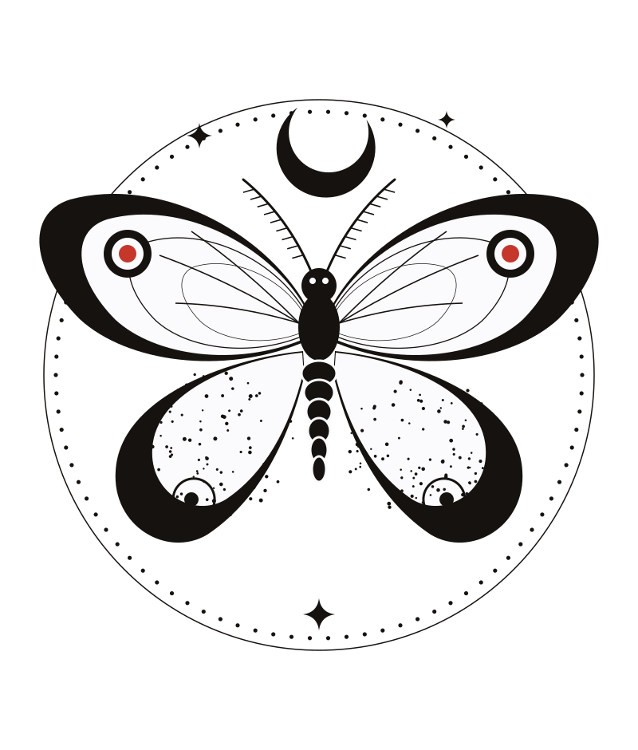
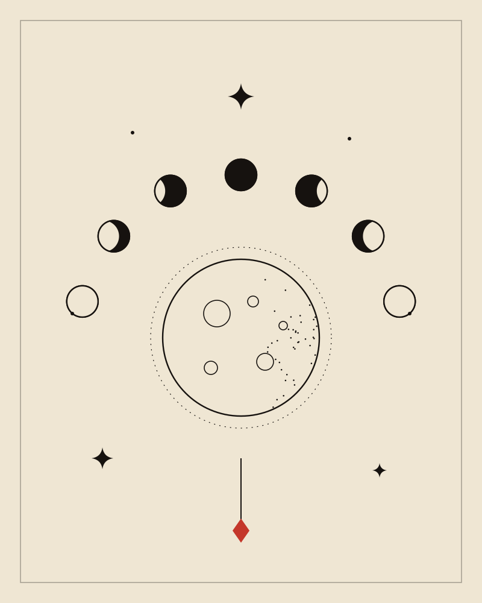
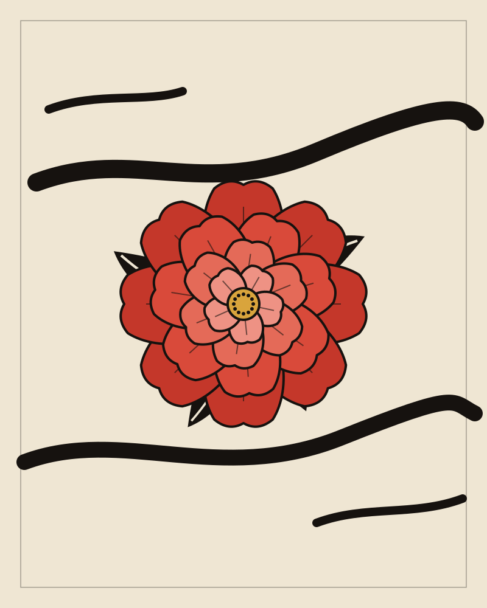

Inchiostroche raccontachi sei.
Tatuaggi su misura in blackwork, fine line, dotwork, tradizionale e giapponese. Ogni progetto nasce da una consulenza e viene disegnato solo per te.

- 01Solo su appuntamento
- 02Aghi e materiali monouso
- 03Disegni originali, mai ripetuti
Ogni tatuaggio nasce da una conversazione, prende forma sulla carta e resta con te per sempre.
Sei linguaggi,
un solo segno.

Blackwork
Nero pieno, contrasti netti e motivi ornamentali. Il nero resta leggibile per decenni.Scopri lo stile
Fine line
Linee sottilissime e dettagli minuti, per botanici, simboli e piccole scritte eleganti.Scopri lo stile
Dotwork
Sfumature costruite punto per punto: morbide, vibranti, perfette per la geometria.Scopri lo stile
Tradizionale
Contorni spessi e colori pieni. Lo stile old school nasce per durare.Scopri lo stile
Giapponese
Onde, nuvole e fiori pensati per seguire il corpo, dalla fascia alla schiena intera.Scopri lo stile
Realistico
Luci e ombre in bianco e nero, come in una fotografia: ritratti, animali, dettagli.Scopri lo stile
Una stanza,
un artista,
tutto il tempo.
INKUBO è uno studio privato: si lavora su appuntamento, una persona alla volta. Niente catena di montaggio, niente sala d’attesa affollata. Solo il tuo progetto, dall’idea al disegno fino all’ultimo controllo dopo la guarigione.
- 01Disegno su misuraOgni tatuaggio parte da zero e non viene rifatto ad altri.
- 02Consulenza gratuitaSi parla di idea, posizione, dimensioni e preventivo.
- 03Ritocco inclusoUn controllo dopo la guarigione, se serve si ritocca.
Flash disponibili.
Disegni già pronti, tatuati una volta sola. Quando uno viene scelto, esce dal quaderno per sempre.




Dall’idea alla pelle.
Quattro passaggi, senza sorprese. Il preventivo lo conosci prima di iniziare.
- 01
Richiesta
Compili il modulo con idea, zona del corpo e dimensioni. Rispondiamo entro due giorni lavorativi.
- 02
Consulenza
Ci vediamo in studio o in videochiamata: definiamo progetto, posizione e preventivo.
- 03
Disegno
Prepariamo il disegno su misura e fissiamo la seduta con un acconto, scalato dal totale.
- 04
Seduta
Il giorno del tatuaggio rivediamo insieme il disegno sulla pelle prima di cominciare.
Hai già un’idea?
Raccontacela: anche solo una parola, una foto, un ricordo.
Vieni a trovarci.
Lo studio è nel centro storico di Agrigento. Si entra solo su appuntamento: scrivici prima di passare.
Orari
- Martedì – Sabato10:00 – 19:00
- Domenica – LunedìChiuso
- ConsulenzeSu appuntamento